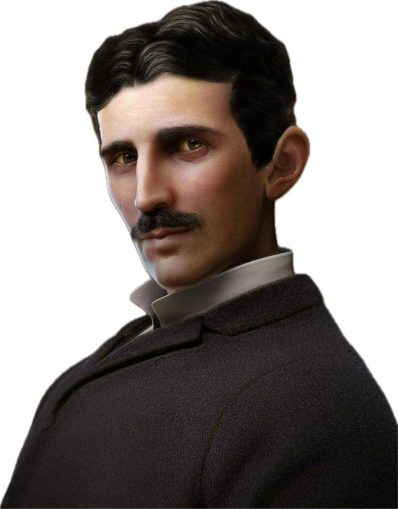

"Empowering the Future,
Electrifying the World"

Biography of
Nikola Tesla
- 1856-1880s
- Early Life and AC Innovations
-
Born in Smiljan, Austria (now Croatia) in 1856, Nikola Tesla embarked on his journey in
electrical engineering. After studying in Graz, he moved to the United States, where he would
make groundbreaking contributions to alternating current (AC) technology, including the
development of the induction motor and transformer.
- 1890s
- Wireless Wonders and Wardenclyffe Tower
- The 1890s marked a period of innovation for Tesla. He demonstrated wireless electricity at the
1893 World's Columbian Exposition and initiated the ambitious Wardenclyffe Tower project. In
Colorado Springs, he conducted groundbreaking experiments that expanded our understanding of
electricity.
- 1900s-1910s
- Radio Rivalry and Financial Struggles
-
Tesla found himself in a fierce rivalry with Marconi over radio technology during this time.
Despite his pioneering work, he faced financial difficulties, ultimately leading to bankruptcy
and the loss of many patents.
- 1940s
- The End of an Era
- Nikola Tesla passed away on January 7, 1943, in New York City, marking the end of an era for one
of history's greatest inventors.
- Late 20th Century
- Posthumous Recognition
- In the late 20th century, Tesla's contributions to science and technology gained the recognition
they deserved, solidifying his place in history.
- 21st Century
- A Growing Legacy
- The 21st century has seen Tesla's legacy continue to grow, with his name synonymous with
innovation and his pioneering work in electromagnetism celebrated worldwide.